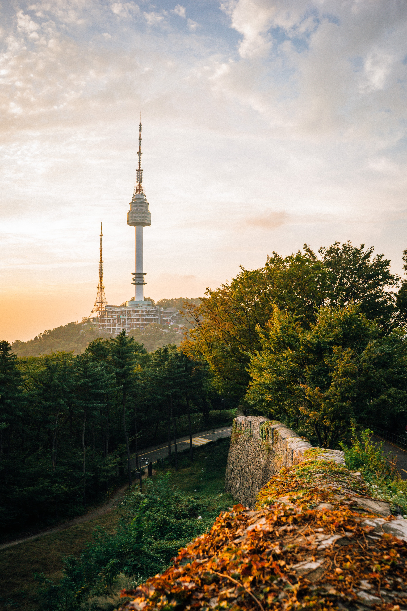

영어 명칭은 Republic of Korea. 남쪽으로는 1,000㎞에 이르며, 북쪽으로는 중국·러시아와 접경을 이루고 있다. 남북한 전체 면적은 영국이나 루마니아와 비슷한 크기이고, 남한은 헝가리나 포르투갈보다는 조금 크고 불가리아보다는 조금 작다.
전 국토의 70%가 산악 지역으로 서해로는 완만한 경사를 이루며, 동해로는 급격한 경사를 이룬다. 또한 국토의 면적에 비하여 강이 많은 편이다. 기후는 사계절이 뚜렷하여 덥고 습한 여름과 춥고 건조한 겨울은 길고, 상쾌하고 청명한 날의 봄·가을은 비교적 짧다. 기온은 겨울에는 영하 15℃로 내려가고, 여름에는 34℃로 올라간다.
한국의 전통적인 종교는 샤머니즘·불교·유교이며, 이들은 역대 국가들의 문화발달 및 사상과 행동에 지대한 영향을 끼쳐 왔다. 그 밖에 근대 이후 고유 종교인 천도교를 비롯해 외래 종교인 기독교(개신교)·천주교를 믿는 인구가 급격히 늘어나고 있다. 주민은 한국인이고 인종적으로는 몽골계에 속하며, 고조선시대 이래로 단일민족으로서 존속하여 왔다.
고조선 이후 고대의 삼국시대, 통일신라와 발해시대, 중세의 고려시대, 근세의 조선시대로 이어져 오던 우리나라는 1910년 일제에 의하여 역사상 처음으로 국권을 상실하고 식민지 지배체제하에 놓이게 되었다. 오랫동안 독립투쟁을 벌여오던 우리 민족은 일본이 제2차세계대전에서 패배함으로써 마침내 광복을 맞이하였다.